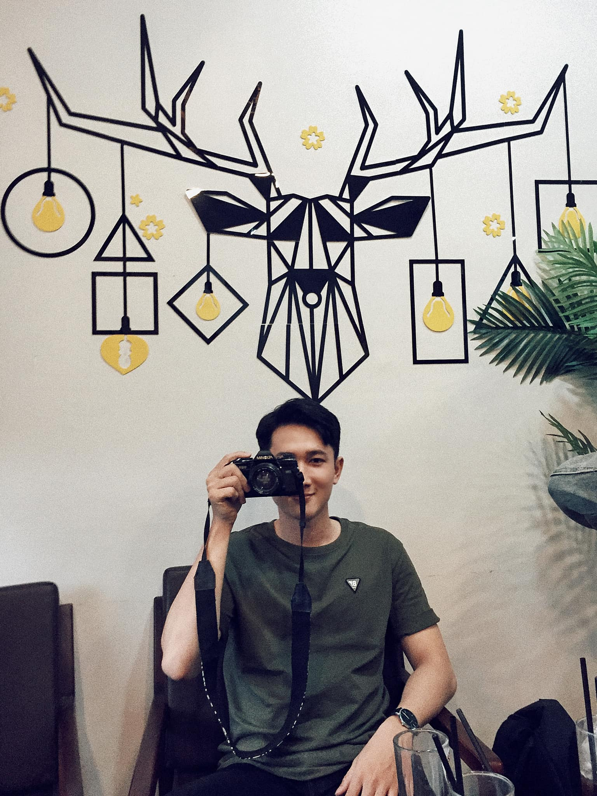

Ngô Công Hậu
Hello.. Xin chào mọi người đã ghé vào page của mình..
“Ờ.. "giới thiệu gì bây giờ ta..""
tôi cũng hổng có gì đặc biệt trơn, văn vỡ đồ cũng dỡ ẹt hà nên cũng hỏng biết nói dì😅
Tôi sinh năm 2k, sinh ra và lớn lên ở Tiền Giang, bạn bè tôi nó hỏi "quê mày có gì đặc sản hông?" bài hát hành trình trên đất phù xa thì có câu: *quýt Cái Bè nổi tiếng ngọt ngây*
quýt đâu hỏng thấy trồng mà tui thấy toàn là lúa với mít không hà 😅,
Là một người hướng nội, thích yên tĩnh, dễ cọc lóc. Có xúc cảm với cái đẹp của thiên nhiên, yêu những ánh mắt cử chỉ hồn nhiên của động vật. Tôi may mắn khi được mẹ cho mua máy cơ, chụp thì không đẹp
nhưng cũng có được vài người bạn cùng đam mê, họ đã chụp giúp tôi vài bức ảnh lưu giữ lại tuổi trẻ, tôi để ở bên đó đó 👉
Còn nói về sở thích thì tui thích đủ thứ, thích nhiều lắm, nhấn vô đây để xem nè..
sở thích nhiều lắm ^^
Sau khi học cũng tới năm thứ 3 thì mình khám lại bản thân của mình thì tui cảm thấy mình thích làm web ghê luông, làm frontend á! tôi đang cố gắn hết sức mình để thiệttt nhuần nhuyễn cái đống này, và có được vị trí việc làm tốt sau khi ra trường! làm việc mình thích thì còn gì bằng he mọi người..
Tôi mê đá banh từ nhỏ xíu lận, hai anh em ở nhà làm bể, lủng, lên nóc nhà biết bao nhiêu trái banh mà nói, tới đi học thì chơi đến nổi gòm như cây sậy luôn mà vẫn mê. giờ mới có 21 chậm chạp rồi mà mỗi lần ra sân banh chơi cảm giác thiệt là phêêê.. đá lần có 5 phút mà thở le lưỡi không, ngồi coi đồng đội đá thoi cũng đã !!!
Tôi biết bóng truyền thì trễ đá banh, cái hồi còn gòm á bay nhẩy đồ cũng có lý lắm. Giờ bụng chang bang mỡ không gòi, lâu lâu ngồi nhà mở youtbe coi bậy đỡ ghiền thôi..
Cảm giác khi cầm máy ảnh trong tay ngấm ngấm, tiếng bắt nét của máy ảnh nghe kích thích vãi luông, mỗi khi chụp ra tấm hình đẹp ta nói nó sướng! đi cũng được 12/13 tỉnh miền tây rồi. nó mang lại cho tôi nhiều người bạn lắm và nhiều khách chửi nữa haha
Chơi với chó á! Chó nó chung thành, ngoan, dễ thương lắm!!!!!! Tôi xem tụi nó nhưng những người bạn của tôi vậy.
Tôi từng nghe câu du lịch là đi từ nơi chán của mình sang nơi củ xèm của khác để rồi mệt đừ rồi quay dề nơi chán của mình kkk. tôi cũng chưa có điều kiện để đi nhiều nơi, thôi thì ở nhà bật tivi rồi coi người ta đi du lịch giùm mình vậy, vài năm sau đủ điều kiện thì tha hồ mà đi hehee
Đây là một số dự án website cùi bắp của tui, cũng mới mò mẩm làm gần đây à nên còn dỏm lắm! à còn đang hoàn thiện vài project React chừng nào xong thì tui sẽ khoe thêm lên đây hehe
"à.. nếu sử dụng máy tính thì rê chuột vô rồi nhấn vào link nha, còn sử dụng điện thoại thì nhấn vào ^^"
the band
wordpress
DU LICH
LANDING PAGE
CONG HAU
RESTAURANT
LANGDINGPAGE
Hết trang rồi. Hẹn gặp lại mọi người ❤